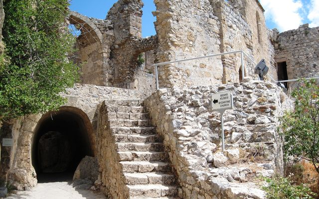
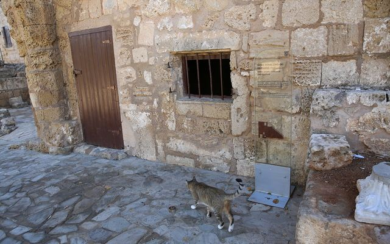

1日目は城壁に囲まれたニコシアでセリミエ、ビュユク・ハン、メヴレヴィー修道場を訪ね、キレニアへ移動してベラパイス修道院、聖ヒラリオン城、夕暮れのキレニア城へ。2日目はファマグスタで、サラミス、王家の墓、聖バルナバ、エンコミを巡った後、オセロ城とララ・ムスタファ・パシャ・モスクへ。
日目 1

セリミエ・モスクは、レフコシャ（ニコシア）の城壁に囲まれた旧市街の中心にそびえています。13世紀初めに着工され14世紀に完成した聖ソフィア大聖堂として、リュジニャン朝の王がキプロス王として戴冠した場所であり、島最大のゴシック建築です。1571年のオスマン征服の後にモスクとなり、ゴシックの塔の上に2本のミナレットが加えられ、20世紀にスル…

レフコシャのセリミエ・モスクのすぐそばにあるラピダリ博物館は、15世紀の2階建ての石造りの建物にあります。「ラピダリ」とは石の作品を意味し、庭と部屋には、リュジニャン時代とヴェネツィア時代の紋章、墓石、石棺、ゴシックの窓の断片、柱頭、碑文が並んでいます。その中には、取り壊されたリュジニャンの宮殿から来たことが知られる優美なゴシックの窓も…

旧レフコシャのビュユク・ハン（「大きな隊商宿」）は、島の最初のオスマン総督ララ・ムスタファ・パシャが1572年に建てた2階建ての隊商宿です。大きな中庭を囲むアーケードに数十の部屋が開き、中庭の中央には泉の上に建てられた小さな八角形の礼拝所があります。何世紀にもわたり商人や旅人を泊め、商品を保管し、イギリス統治時代には一時期刑務所でした。…

レフコシャのキレニア門近くにあるメヴレヴィー修道場博物館は、17世紀に創設されたメヴレヴィー教団の修道場の建物にあります。ルーミーの道に従う修道者が旋回の儀式を行ったセマーハーネは、木の天井と楽士の席とともに残っています。6つのドームを持つ墓廟には修道場のシェイフたちの墓があります。ネイやクデュムなどメヴレヴィーの楽器、写本、書道、修道…

レフコシャのアラプアフメト地区にあるデルヴィシュ・パシャ邸は、石と木で造られた19世紀の2階建てのオスマンの家です。所有者のデルヴィシュ・パシャは、キプロス最初のトルコ語新聞のひとつ『ザマン』を発行したことで知られています。現在は民俗学博物館として、当時の家具を置いた部屋、花嫁の部屋、トルコ系キプロス人女性の衣装、刺繍、織物、家庭用品が…

ベラパイス修道院は、ギルネの南東、ベシュパルマク山脈のふもとのベイレルベイ村で、海を見下ろすテラスに建っています。12世紀末に創建され、13〜14世紀にリュジニャン朝の王の支援で拡張され、キプロスで最も美しいゴシック建築のひとつとされています。尖頭アーチに囲まれた回廊、海に向かって窓が開く大食堂、今も立つ教会が際立っています。ロレンス・…

ギルネの西、ベシュパルマク山脈の標高約730メートルの岩山の頂にある聖ヒラリオン城は、キプロスで最も有名な城のひとつで、そのおとぎ話のような姿は岩と一体化しています。ここに暮らしたといわれる隠者ヒラリオンにちなんで名付けられました。ビザンツの修道院兼要塞で、リュジニャン朝のもとで王の夏の離宮と防衛の要として拡張されました。下・中・上の郭…

キレニア城は、ギルネ（キレニア）の歴史ある港の東端にそびえています。ビザンツ起源でリュジニャン朝のもとで拡張され、その巨大な城壁と角の稜堡は16世紀にヴェネツィアが大砲に備えて築きました。内部には12世紀の小さなビザンツの礼拝堂とオスマン時代の墓廟があります。本当の宝は沈没船博物館で、1965年に海綿採りのダイバーが見つけた紀元前4世紀…
日目 2

ガズィマウサ（ファマグスタ）の北約8キロ、海辺の砂丘と松林の中にあるサラミスは、キプロス最大級の古代都市です。トロイ戦争から戻ったテウクロスが築いたと伝えられ、何世紀にもわたり島で最も強力な王国のひとつの首都でした。列柱の中庭と首のない彫像が並ぶローマ時代のギムナシオンが最大の見どころで、浴場、モザイクの遺構、約1万5千人を収容する劇場…
古代サラミスの西にある王家の墓は、紀元前8〜7世紀の街のエリートの墓地です。石で縁取られた広い参道（ドロモス）と記念碑的な墓室からは、死者とともに犠牲にされた馬の骨や戦車の残骸が見つかり、ホメロスが描いた英雄の葬儀を思わせる埋葬習慣を示しています。小さな遺跡博物館が出土品と儀式を紹介しています。ローマ時代に再利用され、のちに礼拝堂となっ…

サラミス近くの聖バルナバ修道院は、キプロス教会の創始者とされる使徒バルナバの名を冠しています。サラミス出身でパウロの同行者であった彼は、ここで殉教したと伝えられます。5世紀に彼の墓が見つかったことは、キプロス教会の独立が認められる助けとなりました。現在の教会は18世紀に建てられたもので、イコン博物館となっており、修道院の僧房には新石器時…

トゥズラ村近くのエンコミ（アラシヤ）には、キプロスで最も重要な後期青銅器時代の都市のひとつの遺構があります。銅の生産と東地中海交易で栄え、エジプトのアマルナ文書に登場するアラシヤ王国と結びつけられていますが、その比定はまだ議論されています。碁盤目状の街路、見事な切石の建物、聖域を見ることができます。ここで見つかった青銅の「角のある神」や…

オセロ城は、ガズィマウサ（ファマグスタ）の城壁に囲まれたカレイチ地区で港を守るために築かれた城塞です。14世紀にリュジニャン朝のもとで建てられ、15世紀末にヴェネツィアによって大砲に備えて強化されました。入口の上の聖マルコの獅子のレリーフがそれを物語ります。その名は「キプロスの港町」を舞台にしたシェイクスピアの『オセロ』に由来します。ゴ…

ララ・ムスタファ・パシャ・モスクは、ガズィマウサの城壁都市の象徴です。14世紀初めにリュジニャン朝によって聖ニコラオス大聖堂として完成し、フランスの大聖堂を思わせるファサード、バラ窓、尖頭アーチの入口を持つ、東地中海で最も印象的なゴシック建築のひとつです。リュジニャン朝の王はここでエルサレム王として戴冠しました。1571年のオスマン征服…

ガズィマウサの城壁都市にあるナームク・ケマル牢獄と博物館は、「祖国の詩人」ナームク・ケマルが、1873年に戯曲『祖国あるいはスィリストレ』が上演された後に流刑となった場所です。彼は1873年から1876年までファマグスタに滞在し、最初の期間をこのヴェネツィア時代の石造りの建物で過ごしました。肖像画、初版本、書簡、当時の文書が展示されてい…
旅の計画に役立つ、日ごとのモデルコースです。所要時間は目安です。出発前に開館時間や道路状況をご確認ください。